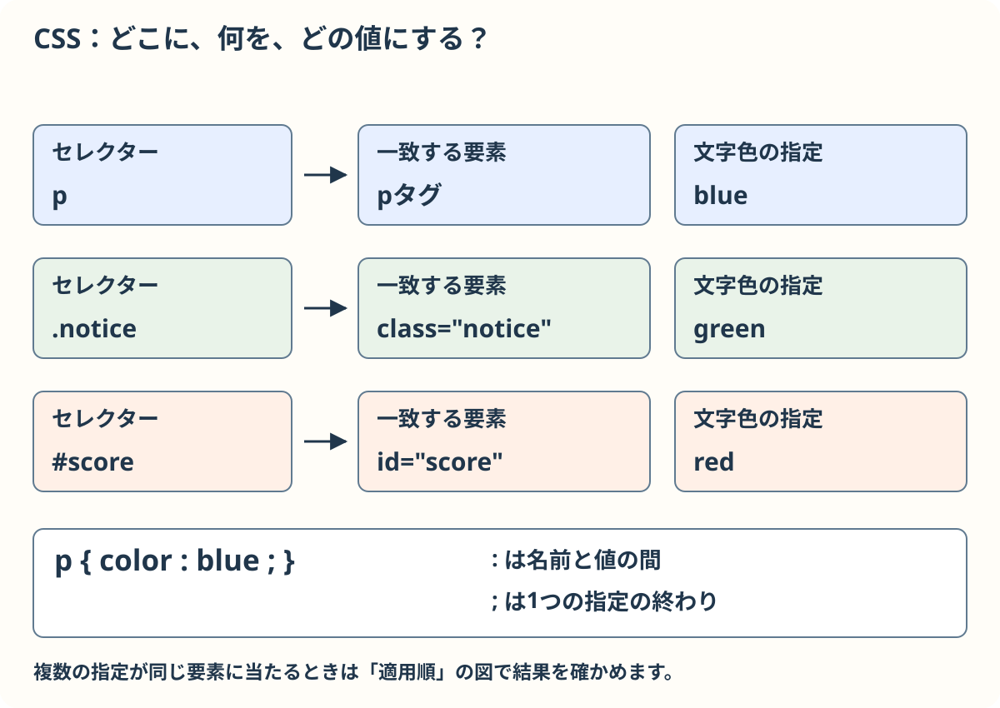
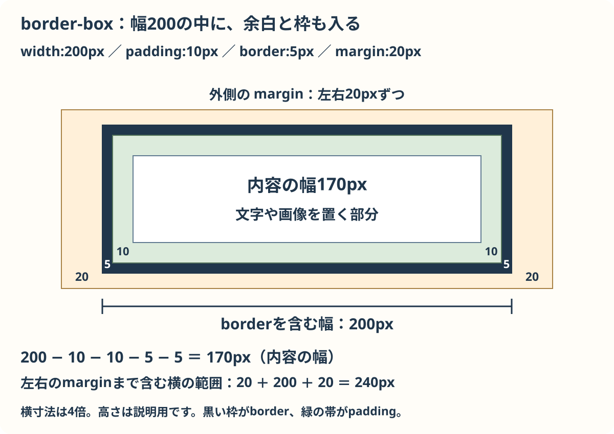
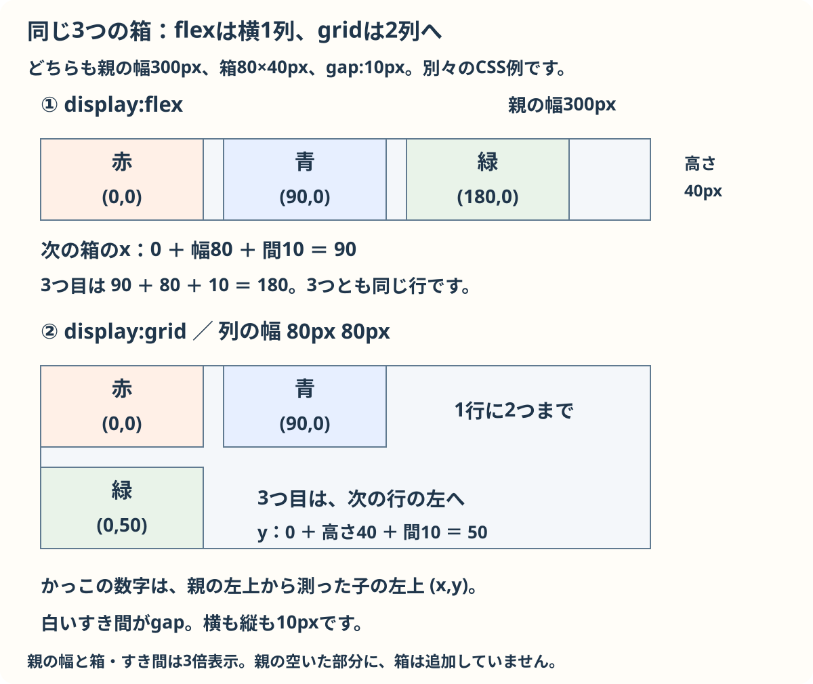
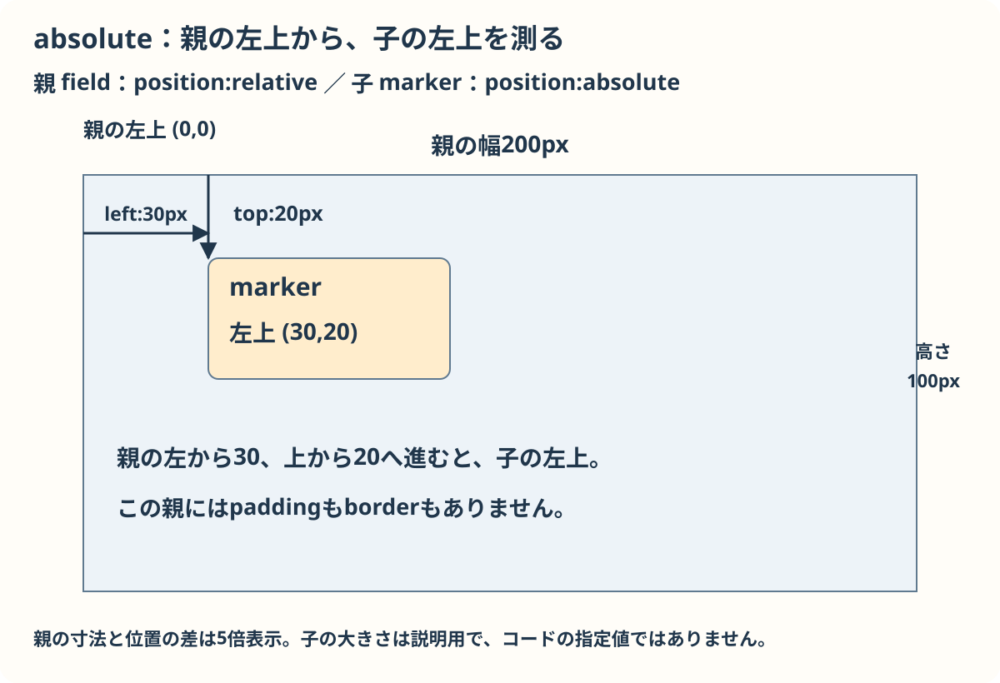
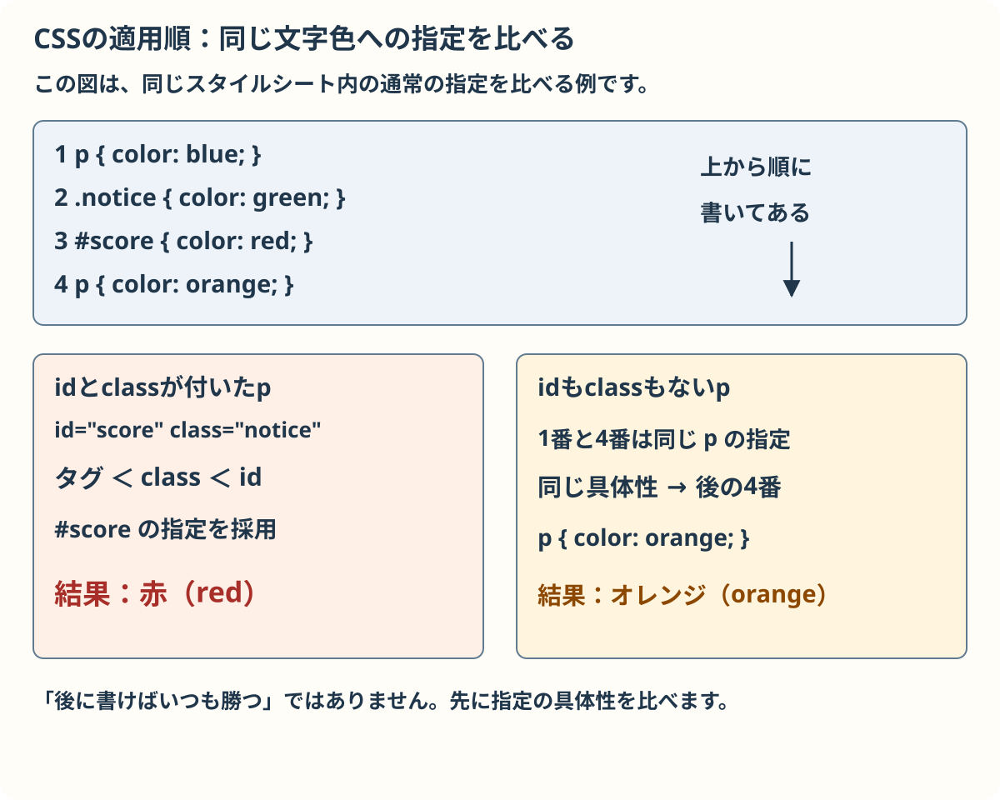

CSSの基本文法
CSSはHTMLの部品の見た目と並びを決めます。練習見本を開き、必要な節から試しましょう。
ZIPを展開してできたフォルダーのindex.htmlを開きます。練習に使う3ファイルと画像が入っています。
展開した作業用フォルダーの style.css を編集します。各コード欄は独立した例です。試す前に元のCSSを別の場所に保存し、作業用フォルダーのstyle.cssの中身全体を選んだ例に置き換え、保存して見本を再読み込みします。断片には対象の要素が必要です。元に戻すときは保存したCSSを戻します。
基本：指定先と宣言
どの部品に、どんな見た目を付けるかを指定します。指定先をセレクター、color: blue; のような一つの指定を宣言と呼びます。名前と値をコロンで分け、宣言の終わりにセミコロンを書きます。
指定先ごとに色を変える
これは独立したCSSの例です。練習用の style.css で確かめます。
独立した例
p { color: blue; }
.notice { color: green; }
#score { color: red; }p は要素、.notice はclass、#score はidを選びます。

p はタグ、.notice はclass、#score はidを選びます。色は名前のほか #ff0000 や rgb(255, 0, 0) のようにも書けます。
確認：class="notice"を選ぶのは？
先頭に点を付けた .notice です。
文字と背景を変える
font-family は文字の種類、font-size は文字の大きさ、line-height は行の高さ、text-align は文字の左右のそろえ方です。background-color は背景の色を指定します。
次も 作業用フォルダーの style.css 全体へ入れる独立した例です。保存して見本を再読み込みすると、段落は20pxの文字で中央に寄り、背景が薄い黄色になります。line-height: 1.5 の行の高さはこの20pxの1.5倍の30pxです。
文字と背景を整える
これは独立したCSSの例です。練習用の style.css で確かめます。
独立した例
body { font-family: sans-serif; }
p { font-size: 20px; line-height: 1.5; text-align: center; background-color: lightyellow; }font-size は文字の大きさ、line-height は行の高さ、background-color は背景色です。
確認：文字が20pxで行の高さが1.5なら？
20 × 1.5で30pxです。
基本：大きさと単位
px はピクセル、% は基準に対する割合、rem はページの基準文字サイズに対する倍率です。基準文字サイズを16pxにしたとき 1.5rem は24pxです。親の幅が200pxなら width: 50% は通常100pxになります。
基準に合わせて大きさを決める
これは独立したCSSの例です。練習用の style.css で確かめます。
独立した例
html { font-size: 16px; }
.parent { width: 200px; }
.child { width: 50%; font-size: 1.5rem; }親の幅200pxの50%は100pxです。基準文字サイズ16pxの1.5remは24pxです。
確認：親の幅が200pxのとき50%は？
100pxです。
基本：箱と余白
要素の内容の外側に内側の余白、枠、さらに外側の余白があります。名前は順に padding、border、margin です。box-sizing: border-box なら指定した幅にpaddingとborderを含めます。
幅と余白を決める
これは独立したCSSの例です。練習用の style.css で確かめます。
独立した例
.panel {
box-sizing: border-box;
width: 200px;
padding: 10px;
border: 5px solid black;
margin: 20px;
}border-box では指定幅200pxに内側の余白と枠が含まれます。margin は外側の余白です。

幅200pxから左右のpadding各10pxとborder各5pxを引くので、中身の幅は170pxです。marginは幅200pxの外側にあります。見本で右クリックして「検証」を開くと、ブラウザーの箱の図で確かめられます。
確認：左右のpaddingとborderを引いた中身の幅は？
200 − 10 − 10 − 5 − 5 = 170pxです。
基本：並び方
通常、div や p は新しい行から並び、span は文の流れの中に並びます。親に display: flex を付けると子を横に並べられます。
flexで横に並べる
これは独立したCSSの例です。練習用の style.css で確かめます。
独立した例
.row { width: 300px; display: flex; gap: 10px; }
.tile { width: 80px; height: 40px; }幅80pxの箱を横に並べ、gap: 10px で間隔を空けます。
見本では3つの tile があり、親の幅は300px、各80×40px、間は10pxです。flexでは3つが横に並びます。狭い親では初期設定のflexが子を縮めるため、図の幅を確かめるときは親を十分広くするか flex-shrink: 0 を付けます。
別の並べ方として、親を grid にすると列の幅を決められます。次も style.css 全体を置き換える独立した例です。
gridで列を作る
これは独立したCSSの例です。練習用の style.css で確かめます。
独立した例
.row { width: 300px; display: grid; grid-template-columns: 80px 80px; gap: 10px; }
.tile { height: 40px; }grid-template-columns で80pxの列を2つ作り、間隔を10pxにします。

この例では80pxの列が2つ、間が10pxです。3つ目は次の行に並びます。grid-template-columns: 1fr 1fr; なら残り幅を2列に分けられます。
確認：箱の間を10px空ける指定は？
親に gap: 10px を指定します。
補足：重ねる場所
位置をずらす基準を作るには、親に position: relative を指定し、子に position: absolute を指定します。この例では親の左上を基準に、子を右へ30px、下へ20px置きます。
位置の基準を決める
これは独立したCSSの例です。練習用の style.css で確かめます。
独立した例
.field { position: relative; width: 200px; height: 100px; }
.marker { position: absolute; left: 30px; top: 20px; }relative の親を基準に、absolute の箱を左30px・上20pxに置きます。

この親には枠とpaddingを付けていません。absoluteは通常の並びから外れます。relativeだけでは元の場所を保ちます。
確認：markerの基準になるのは？
position: relative を指定した field です。
補足：同じ場所に複数の指定
この例では、同じスタイルシート内の通常の指定について、同じ要素の同じ性質に複数の指定があると優先度を比べます。id、class、タグの順に具体性が高く、同じ具体性なら後に書いた指定が勝ちます。
同じ要素への指定を比べる
これは独立したCSSの例です。練習用の style.css で確かめます。
独立した例
p { color: blue; }
.notice { color: green; }
#score { color: red; }
p { color: orange; }#score、.notice、p ではidの指定が強く、同じ強さでは後に書いた指定が使われます。

見本の <p id="score" class="notice"> なら赤です。普通のpは同じ具体性で後に書いたorangeになります。別々の性質は両方適用されます。ブラウザーの検証画面で、どの指定が有効か確かめられます。
確認：idとclassが同じcolorを指定したら？
この例ではidの指定が勝ちます。
補足：画面幅と操作
次も練習見本の style.css 全体を置き換える独立した例です。3つの箱は通常、幅300pxの親の中で横に並びます。max-width: 100% は親の幅が狭いとき、row が親より広がらないようにします。画面幅が600px以下になると、箱が縦に並びます。
画面幅と操作で見た目を変える
これは独立したCSSの例です。練習用の style.css で確かめます。
独立した例
.row { display: flex; width: 300px; max-width: 100%; gap: 10px; }
.tile { width: 80px; height: 40px; background-color: lightblue; }
@media (max-width: 600px) {
.row { flex-direction: column; }
}
button:hover { background: lightblue; }
button:focus-visible { outline: 3px solid orange; }幅600px以下では flex-direction: column で縦に並びます。:hover と :focus-visible は操作中の見た目です。
保存して見本を再読み込みし、ブラウザーの幅を600pxより広くしたときと600px以下にしたときの並びを比べましょう。
:hover はポインターを重ねた状態、:focus-visible はキーボードなどで選択中の目印です。Tabキーでボタンを選び、枠が見えるか確かめましょう。
確認：Tabで選んだ場所を分かりやすくする指定は？
focus-visibleの枠です。